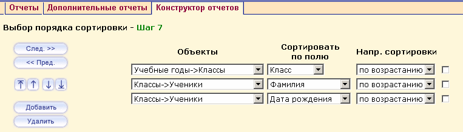

Здесь вы выбираете порядок и направление сортировки выводимых данных. Другими словами, тот порядок (сверху вниз), который вы определите здесь, в таком порядке (слева направо) будут выводиться столбцы в отчете. Направление сортировки можно задать в каждой строке свое. Данные для сортировки определяются на Шаге 2, Шаге 3 и Шаге 4.
При добавлении двух и более полей для сортировки, появляются кнопки для изменения порядка в котором будут сортироваться данные:
Примечание: При удалении одного из группируемых полей, введенных на Шаге 4 – «Выбор способа группировки данных», автоматически системой это поле будет удалено и с Шагов 5 – «Выбор возвращаемых полей», 7 – «Выбор порядка сортировки». При добавлении нового возвращаемого поля на Шаге 5 или новой сортировки по полю на Шаге 7, если в создаваемом отчете уже были добавлены поля для группировки на Шаге 4, система автоматически добавит это новое поле в число группируемых. При удалении же из группировки всех полей сразу (что будет означать отсутствие групповых функций) возвращаемые поля и поля, по которым производится сортировка, останутся в отчете в неизменном состоянии.
Обычно при группировке сортировка происходит автоматически и её указывать не обязательно, но если нужно отсортировать в противоположном направлении, её можно изменить на Шаге 7 – «Выбор порядка сортировки».
В отчете «Список мальчиков 90-91 гг. рождения» выберем сортировку по возрастанию по всем трем полям: Класс, Фамилия, Дата рождения. После выбора порядка сортировки нажимаем кнопку След. >> для перехода на Шаг 8 - Выбор фильтров для пользователя.
